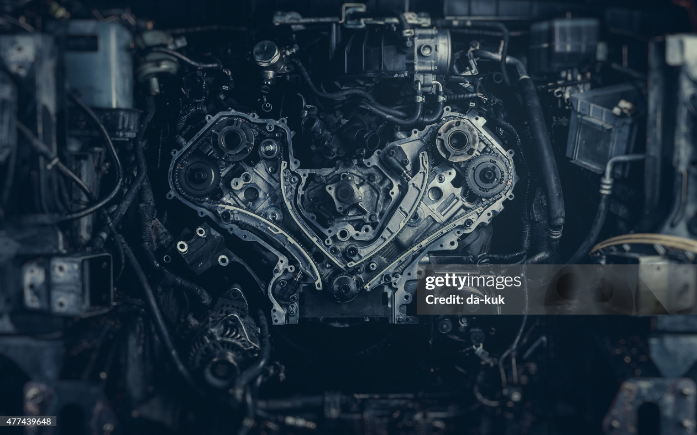

WHEELSKNOW is the most unique feature of WHEELSPEDIA. This feature is designed to give you the most accurate information about the car and its other parts this feature will help you to know the car better and will help you to be a car enthusiast.
WHEELSKNOW will also assist you to maintain the car by giving the user appropriate knowledge.
The user can also ask questions and get answers from the community of car enthusiasts and experts from our team .

Engine
There are majorly two types of engine Petrol engine and Disel engine
Petrol engine
In a petrol engine, a mixture of air and petrol is drawn into the combustion chamber. This mixture is then compressed by the upward movement of the piston. A spark plug ignites the mixture, causing a controlled explosion that pushes the piston down, generating power.
Petrol engines commonly have configurations ranging from three to eight cylinders. More cylinders typically mean smoother operation and more power.
key components of a petrol engine
Pistons: Move within the cylinders to convert fuel combustion into mechanical energy.
Camshaft: Controls the timing of the opening and closing of the valves.
Valves: Intake valves allow the air-fuel mixture into the cylinder, while exhaust valves release combustion gases.
Fuel System: Includes fuel injectors (or carburetors in older models) that deliver the correct amount of petrol to the engine.
Disel engine
A diesel engine is a type of internal combustion engine that uses diesel fuel to power the vehicle. Here’s a detailed overview of its key features, components, and characteristics:
Diesel engines operate on the principle of compression ignition. Unlike petrol engines, they compress air in the combustion chamber to a high pressure and temperature, then inject diesel fuel into the hot compressed air. This causes spontaneous ignition of the fuel.
Diesel engines can have a range of cylinder configurations (e.g., four, six, or eight cylinders). They are typically heavier and more robust than petrol engines due to the higher pressures involved.
key components of a petrol engine
Pistons: Similar to petrol engines, pistons move up and down within the cylinders to convert combustion energy into mechanical work.
Crankshaft: Converts the linear motion of the pistons into rotational motion.
Valves: Intake valves allow air into the cylinder, while exhaust valves release combustion gases.
Fuel System: Diesel engines use fuel injectors to spray diesel fuel directly into the combustion chamber at high pressure.
wheel
Wheels are critical components of a vehicle, providing support, enabling movement, and playing a key role in handling and stability.
Wheel Rim:
The outer edge of the wheel that holds the tire. Rims can vary in width and diameter, influencing tire fit and vehicle performance.
Tire:
The rubber covering that fits around the wheel rim. Tires are designed to provide traction, absorb shock, and enhance ride comfort. They come in various types (e.g., all-season, performance, off-road) tailored for specific driving conditions.
Hub:
The central part of the wheel that connects to the vehicle’s axle. It houses the wheel bearings, which allow the wheel to rotate smoothly.
Spokes (if applicable):
Some wheels have spokes that connect the rim to the hub. Spoked wheels are often found on bicycles and motorcycles for weight reduction and increased strength.
Car Health
Regular car maintenance is crucial for ensuring the longevity and performance of your vehicle.Maintaining your car’s health is necessary for several important reasons. First and foremost, regular maintenance ensures safety. A well-maintained vehicle is less likely to experience sudden breakdowns or failures, such as brake malfunctions or tire blowouts, which can lead to accidents. Second, keeping your car in good condition helps to maximize performance. When components like the engine, transmission, and brakes are properly cared for, the car runs more efficiently, improving fuel economy, reducing emissions, and providing a smoother driving experience. Third, proper maintenance extends the lifespan of your car. By addressing small issues early, you can avoid more costly and major repairs that may arise from neglect. In addition, a well-maintained car typically retains a higher resale value. Lastly, maintaining your car’s health helps you save money in the long run by reducing the likelihood of unexpected repairs and helping to avoid expensive replacements. Regular servicing ensures your car continues to operate reliably and safely for years to come.
Here’s a list of key ways to maintain your car:
Change the oil regularly – Follow manufacturer’s recommendations for oil changes to ensure proper engine lubrication
Inspect and maintain tire pressure – Keep tires properly inflated to improve fuel efficiency, safety, and tire lifespan
Rotate tires – Regularly rotate tires to ensure even wear and extend their life
Inspect brakes – Regularly check brake pads and discs for wear, and replace them when needed.
Test the battery – Check the battery’s charge and condition, and replace it when it starts showing signs of weakness.
Replace spark plugs – Faulty spark plugs can cause engine misfires and reduced performance.
Check the belts and hoses – Inspect for cracks or wear and replace any damaged belts or hoses to avoid engine damage.
Maintain the suspension system – Check for wear on shocks or struts to ensure smooth handling and a comfortable ride.
Keep the interior clean – Regularly vacuum and clean the interior to prevent wear on seats, carpets, and upholstery.